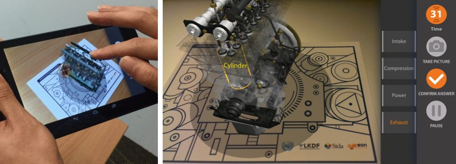

A US-brewery brings movments on their etiquette with Argumented Reality.
Normal beer bootles look boring, but when the user using a app layer comes a ovment on the etiquette.
There is a flowing cascade on the bottlepictures, with a fish who fight against the stream
Tere is an video of the etiquette: Video
Trying to stay at the forefront of AR technology development in the automobile industry, Bosch has been cooperating with AR startup Reflekt since 2013.
Bosch offers its Common Augmented Reality Platform (CAP), which can find many applications including maintenance [6].
The technology is an app-based augmented reality not that far away from how Pokémon GO works.
It is not hard to imagine how car maintenance can be conduced by anyone with a DIY (do-it-yourself) AR application (Fig. 4).
However, also this technology still looks better on PowerPoint presentations and YouTube videos than in reality.

Since 2011, Airbus has used AR for several purposes in their manufacturing facilities under the label Smart Augmented Reality Tool (SART).
This tablet technology has many application areas and are used on all aircraft programs today. Almost 1000 Airbus employees use SART every day.
One example is from the inspection of bracket installation in fuselage assembly where a tablet with a camera superimposes a virtual image of the as-designed assembly over the actual as-built product.
The AR technology quickly enables the operator to detect any deviation. According to Airbus, the introduction of AR has reduced inspection times in some cases from 3 weeks to 3 days.

When it comes to training operators, both VR and AR technologies have great potential. Virtual Reality is already widely used for training.
Typical examples are simulator training for aircraft pilots, military operations, advanced surgery, maritime operations, and so on. In the manufacturing
sector, Audi, for example, uses VR to train operators in assembly tasks before doing real shop-floor assembly. AR on the other hand has found far less application so far.
here is a lot of talk about the potential benefits, but few systems are in use. One simple classroom example is a solution developed by EON Reality for the United Nations
Industrial Development Organization (UNIDO), where students of Volvo Selam Vocational Training Center in Ethiopia learn the basics of diesel engine maintenance (Fig. 6) [8].
Admittedly, this application is really closer to VR than to AR, as it only uses a printed sketch of an engine as reference point in the real world.
